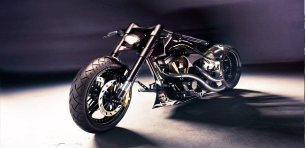

Con un precio de 140 mil euros esta motocicleta de origen alemán mezcla velocidad, fuerza y elegancia en una motocicleta llamada Hamann Soltador Cruiser, que rinde homenaje al actor James Dean y a la marca Harley-Davidson. Cuenta con un motor Harley doble leva B de 1900 cc capaz de proporcionar 160 caballos de potencia, gracias a su peso de 290 kg es capaz de acelerar de 0 a 100 km/h en sólo 3.3 segundos.
